
<!DOCTYPE html >
<!--  Website template by freewebsitetemplates.com  -->
<html>

    <head>
        <title>Nostalgias</title>
        <meta http-equiv="Content-Type" content="text/html; charset=UTF-8" />
        <meta name="description" content="" />
        <meta name="keywords" content="" />
        <link href="css/style.css" rel="stylesheet" type="text/css" />
    </head>

    <body >
        <div id="background">
            <div id="page">

                <div class="header">
                    <div class="footer">
                        <div class="body">

                            <div id="sidebar">
                                <a href="index.html"></a>

                                <ul class="navigation">
                                    <li><a href="index.html">Home</a></li>
                                    <li><a href="CV.html" >Curriculum Vitae</a></li>
                                    <li><a href="education.html">Education and Research</a></li> 
                                    <li><a href="TA.html">Teaching Assistant</a></li>                                   
                                    <li><a href="others.html">Miscellaneous</a></li>

                                </ul>
        
                                <div class="connect">
                                    <SCRIPT LANGUAGE = "JavaScript" src="js/lastmodified.js"> </SCRIPT>
                                </div>


                            </div>         
                            <div id="content" >                    
<H1 ><center>Nostalgias in Nanchang No. 10 High School</center></H1>
 <br />
                                    <br />
<h3><center>This is a Forgotten Empire, but unforgettable for me.</center></h3>
<br/>


<h3>Photos</h3>
<ul>
<li>南昌十中校门</li><a href="nostalgia/gate.jpg"  title="gate"></a>
<li>校门口的雕塑，多少年来仍旧是意气风发。</li><a href="nostalgia/108.jpg"  title="1">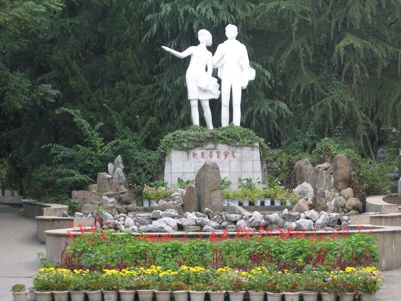</a><a href="nostalgia/109.jpg"  title="2">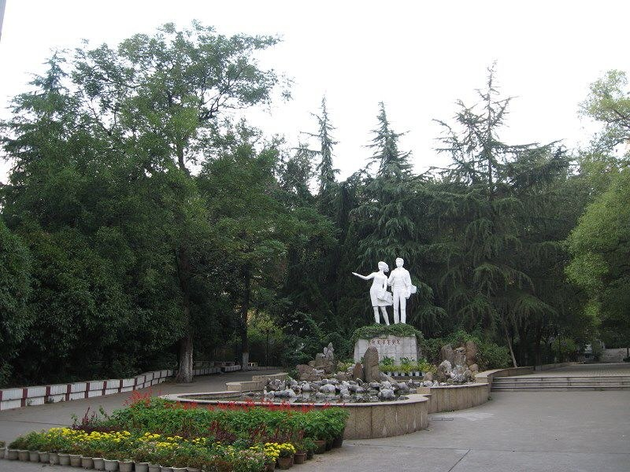</a>
<li>启航雕塑，后于2015年的学校装修中移除。</li><a href="nostalgia/sculpture.jpg"  title="sculpture"></a>
<a href="nostalgia/sculpture2.jpg"  title="sculpture2">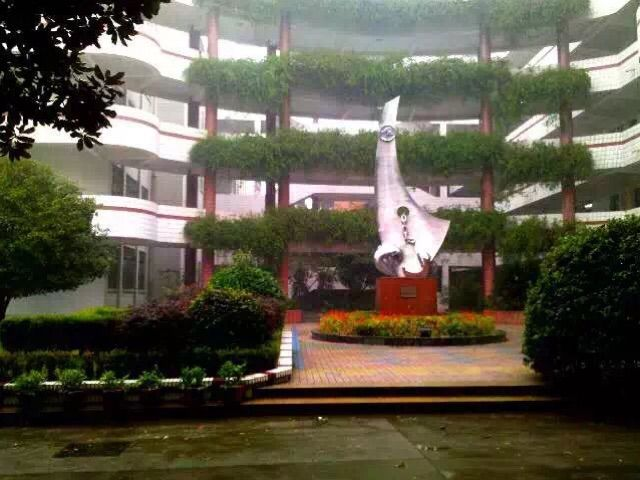</a>
<li>建校时就有的纪念碑</li><a href="nostalgia/milestone.jpg"  title="milestone">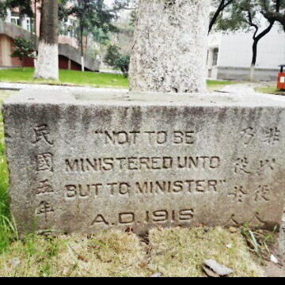</a>
<li>校园香径，也是每天上课必经之路</li><a href="nostalgia/101.jpeg"  title="101">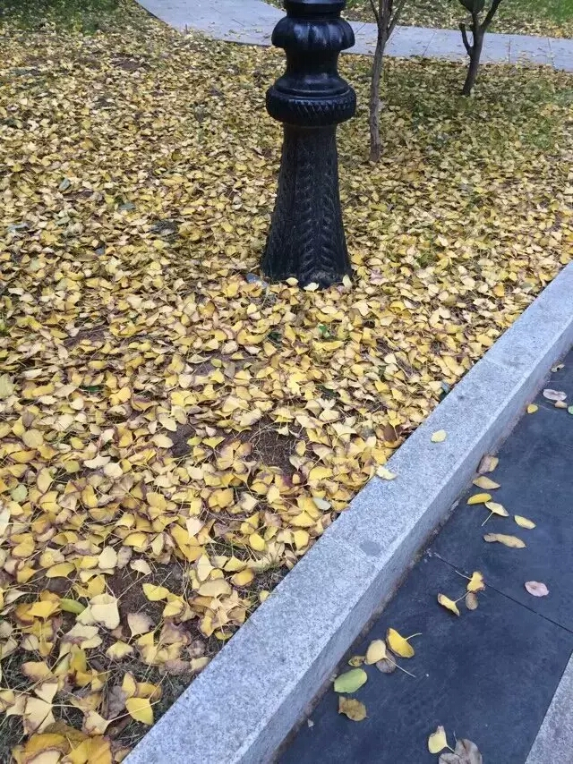</a>
<a href="nostalgia/102.jpg"  title="102">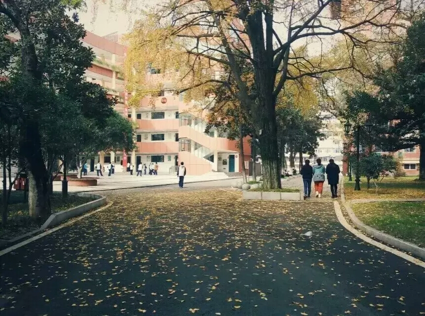</a>
<a href="nostalgia/103.jpg"  title="103">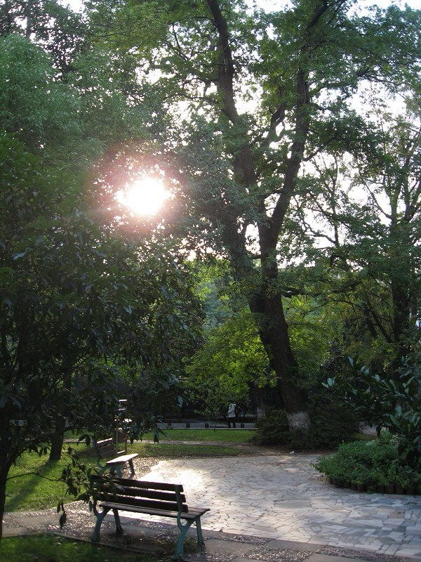</a>
<li>南楼旁，每逢初秋，必是丹桂飘香</li><a href="nostalgia/106.jpg"  title="106">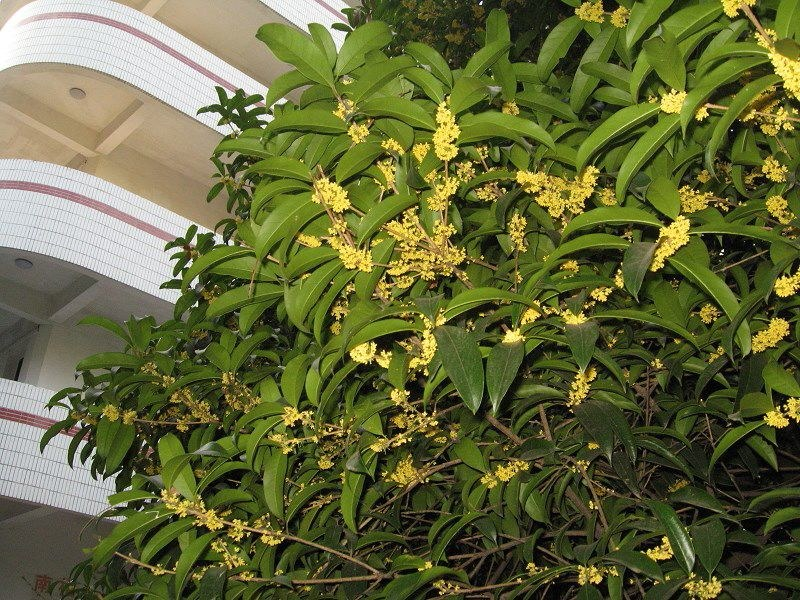</a>
<a href="nostalgia/107.jpg"  title="1076"></a>
<li>参天古树与繁花落锦</li>
<a href="nostalgia/104.jpg"  title="104">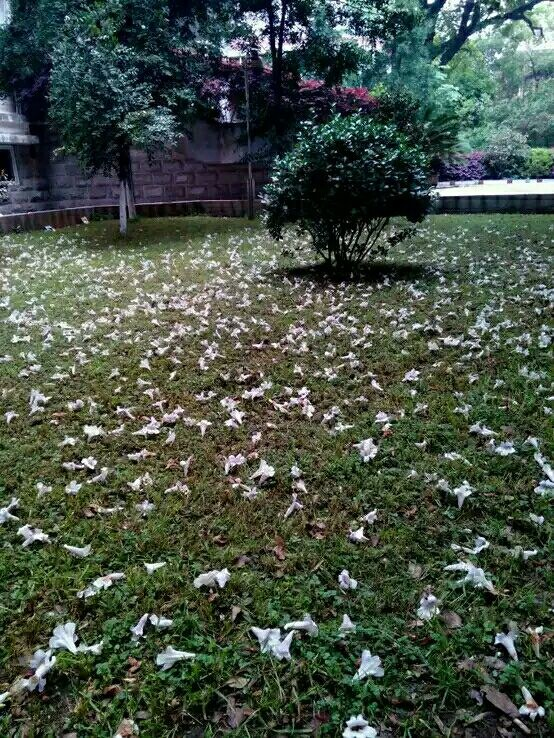</a>
<a href="nostalgia/105.jpg"  title="105">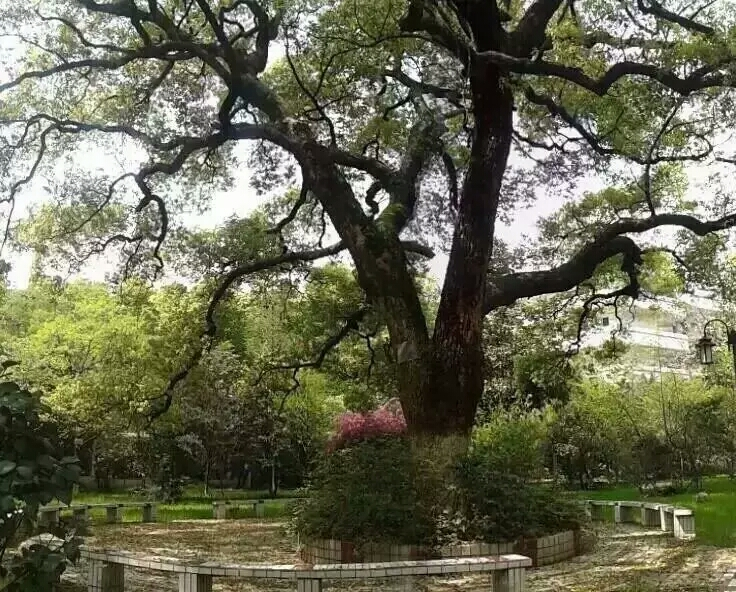</a>
<li>校园美景（金鱼池、雪景、向上草坪等）</li>
<a href="nostalgia/snow.jpg"  title="snow">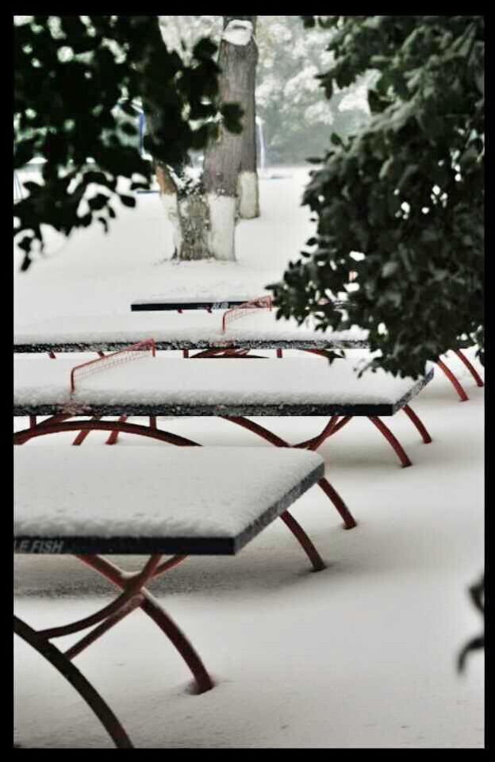</a>
<a href="nostalgia/bridge.jpg"  title="bridge"></a>
<a href="nostalgia/up.jpg"  title="up6">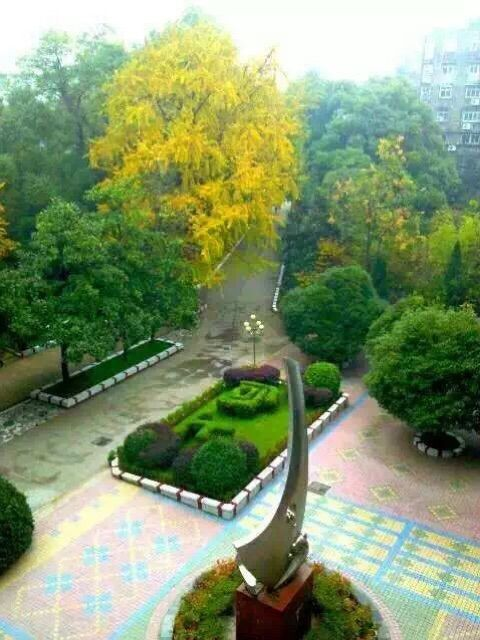</a>


                                <div class="featured">
                                    <div class="header">
                                        <ul>
                                            <li class="first">
                                            
                                            </li>
                                            <li class="last">
                                            <p>
                                            </p>
                                            </li>
                                        </ul>
                                    </div>
                                    <div class="body">
                                        <br />
                                                                     </div>
                                </div>
                            </div>
                        </div>
                    </div>

  <div class="shadow">
                        <!--访问地图代码-->
                        <script type="text/javascript" src="http://jg.revolvermaps.com/b.js"></script><script type="text/javascript">rmb_ki101('60e1dkbowui','9','99','18',1,'ffffff','010020','aa0000');</script>
                    </div>                </div>    
            </div>    
                      

        </body>
    </html>
